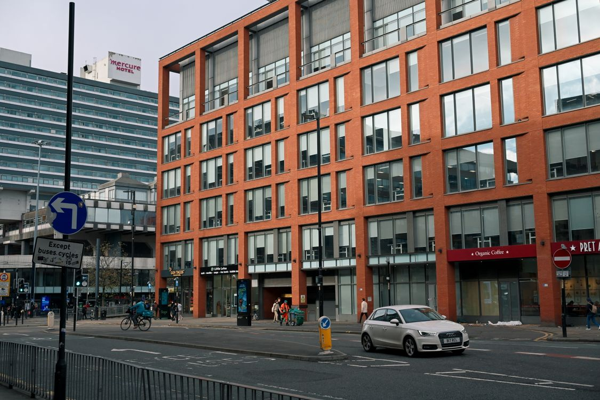

Entreprise de référencement Manchester: référencement local de MediaCity à Deansgate.
244 000 personnes dans les services à forte intensité de connaissances, les plus de 250 entreprises créatives et technologiques de MediaCity et 900 nouvelles entreprises ajoutées l’année dernière. Manchester évolue vite – je garde votre entreprise visible pendant qu'elle le fait.
La croissance de Manchester récompense le visible.
La base d'affaires a augmenté de 30% depuis 2015. Chaque mois ajoute des concurrents — et chaque mois, les clients cherchent.
Concours au niveau du Deansgate
Les marchés des services en centre-ville sont parmi les plus difficiles du Royaume-Uni. Les contenus légers et les profils obsolètes ne survivent pas.
Je me déplace avec la foule
Les recherches basées sur la fréquentation récompensent quotidiennement les profils les plus récents et les mieux évalués.
Une page ne peut pas couvrir le Grand Manchester
Salford, Stockport, Oldham, Bolton — chaque recherche locale.
Un contenu de qualité centre-ville, des pages de zone ville par ville et une routine de profilage et d'évaluation suffisamment agressive pour ce marché.

Manchester d'abord, le Grand Manchester couvert.
Je construis votre présence à Manchester pour rivaliser au niveau du centre-ville, puis l'allonger par la ville — Salford, Stockport, Oldham, Bolton — avec des pages locales appropriées.
- ✓ Pages de services de niveau centre-ville
- ✓ Pages par ville
- ✓ Routine d'examen agressive
Nouveaux concurrents chaque mois.
Avec 900 nouvelles entreprises par an, le SERP ne dort jamais. Ma routine mensuelle – entretenir, construire, créer des rapports – vous permet d'avoir une longueur d'avance sur le taux de désabonnement.
Obtenez mon audit gratuitCe que je fais en fait pour tes affaires.
Quatre étapes, répétées mensuellement à Manchester. Peu glamour, minutieux et entièrement réalisé par moi.
Cartographie de la concurrence en centre-ville et des requêtes locales de chaque ville.
Un flux de GBP et d’avis conçu pour le rythme de Manchester.
Des pages appropriées pour chaque ville du Grand Manchester que vous servez.
Vitesse, structure et contenu au niveau du centre-ville.
Une personne âgée au lieu d'une agence.
Pas de gestionnaires de comptes, pas de juniors qui apprennent sur votre budget — seulement la personne qui fait le travail, vous rendre compte chaque mois.
Un plan, un prix.
SEO complet, effectué mensuellement par un spécialiste senior.
- ✓SEO on-page
- ✓SEO technique
- ✓SEO off-page et développement d'autorité
- ✓Liens partenaires dès le 3e mois
- ✓SEO local pour 1 zone ou ville
- ✓SEO IA : AEO, GEO & AISO
- ✓Rapport mensuel
- ✓WhatsApp direct ou votre plateforme préférée
L'audit est gratuit et ne comporte aucune obligation. Si vous voulez que je répare ce qu'il trouve pour votre entreprise de Manchester, c'est le travail rémunéré.
Ce que l'audit gratuit trouve habituellement.
Avant :Les marchés des services en centre-ville sont parmi les plus difficiles du Royaume-Uni. Les contenus légers et les profils obsolètes ne survivent pas.
Après :Cartographie de la concurrence en centre-ville, ainsi que des requêtes locales de chaque ville — avec une vitesse, une structure et un contenu conformes aux normes du centre-ville.
Avant :Les recherches basées sur la fréquentation récompensent quotidiennement les profils les plus récents et les mieux évalués.
Après :Un flux de GBP et d'avis conçu pour le rythme de Manchester.
Avant :Salford, Stockport, Oldham, Bolton — chaque recherche locale.
Après :Des pages appropriées pour chaque ville du Grand Manchester que vous servez.
Voyez où vous vous trouvez à Manchester.
Un audit gratuit et manuel de votre site, de vos profils et de vos concurrents à Manchester – lacunes et gains rapides, clairement indiqués.
Manchester réponses.
Si votre question de Manchester n'est pas ici, l'audit gratuit le couvre.
Prêt à dominer Manchester?
Réservez un appel stratégique gratuit de 30 minutes. Je vais auditer votre visibilité à Manchester en direct et vous dire exactement ce qu'il faudrait pour atteindre le top 3.